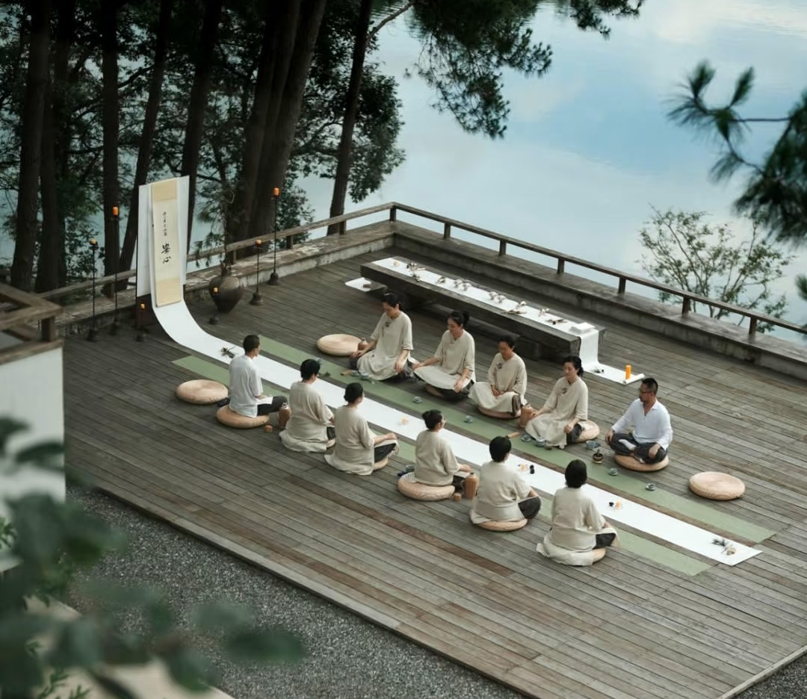

科普知识
你最关心的茶问题，答案都在这里

喝茶有什么好处？
茶叶中含有茶多酚、咖啡因、氨基酸等多种有益成分。适量饮茶可以：
- 抗氧化：茶多酚是天然抗氧化剂，有助于清除自由基
- 提神醒脑：咖啡因能刺激中枢神经，提高注意力和工作效率
- 助消化：饭后喝茶有助于分解油脂，促进消化
- 降脂降压：长期适量饮茶有助于降低血脂和血压
注意：空腹不宜喝浓茶，睡前不宜喝太多茶，孕妇和贫血患者应控制饮茶量。
隔夜茶能喝吗？
不建议喝。隔夜茶因为长时间暴露在空气中，茶多酚氧化会导致颜色变深、口感变差。更重要的是，茶水中的营养成分会滋生细菌，可能引起肠胃不适。
如果茶水没有变质（没有异味、没有浑浊），偶尔喝一口问题不大，但为了健康，建议还是倒掉重新冲泡。
如何正确保存茶叶？
茶叶保存的四大要素：密封、避光、防潮、防异味。
- 密封：使用密封性好的茶叶罐或密封袋，减少与空气接触
- 避光：避免阳光直射，光照会加速茶叶氧化
- 防潮：湿度控制在 60% 以下，潮湿会使茶叶发霉变质
- 防异味：茶叶容易吸附气味，不要与香料、香料等物品放在一起
建议将茶叶放在阴凉干燥处，绿茶和清香型乌龙茶可以放入冰箱冷藏（注意密封）保存更久。
茶多酚是什么？有什么作用？
茶多酚是茶叶中多酚类物质的总称，是茶叶中最主要的活性成分，约占茶叶干重的 20-35%。
主要作用：
- 抗氧化：清除自由基，延缓衰老
- 抗菌消炎：对多种细菌有抑制作用
- 降血脂：有助于降低胆固醇和甘油三酯
- 防辐射：对辐射损伤有一定的保护作用
不同茶类的茶多酚含量不同，绿茶因未经发酵，茶多酚保留最完整。
不同体质的人适合喝什么茶？
- 热性体质（容易上火、口干舌燥）：适合喝绿茶、白茶、生普，清热降火
- 寒性体质（怕冷、手脚冰凉）：适合喝红茶、黑茶、熟普，温胃暖身
- 中性体质：六大茶类都可以尝试，根据季节和心情选择
- 孕妇：建议少喝或不喝浓茶，可选择淡白茶或红茶（需咨询医生）
- 失眠人群：下午 4 点后尽量不喝茶，或选择低咖啡因的白茶、老茶
茶叶中的咖啡因和咖啡中的咖啡因有什么区别？
茶叶和咖啡中的咖啡因化学本质相同，但作用感受不同：
- 释放速度不同：茶叶中的咖啡因与茶多酚结合，释放更缓慢，提神效果更温和持久，不易产生"过山车"效应
- 含量不同：一般茶叶的咖啡因含量低于咖啡（约 2-4% vs 1-2%，但冲泡后因投茶量不同而有所差异）
- 搭配成分不同：茶叶中含有茶氨酸，具有镇静作用，可以部分缓解咖啡因带来的紧张感